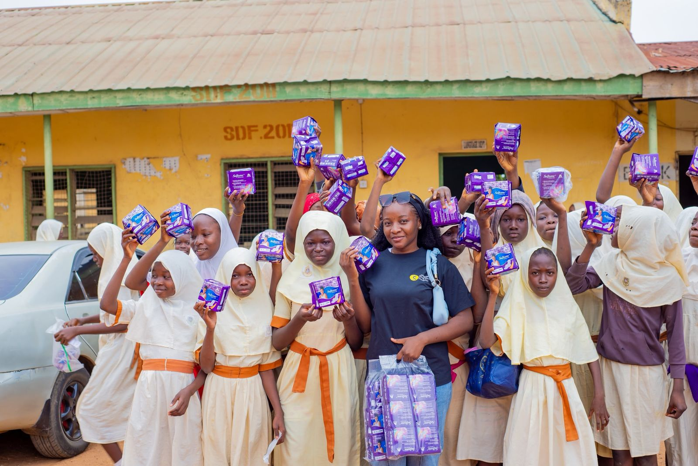
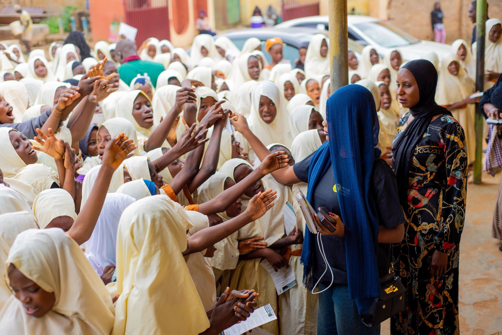
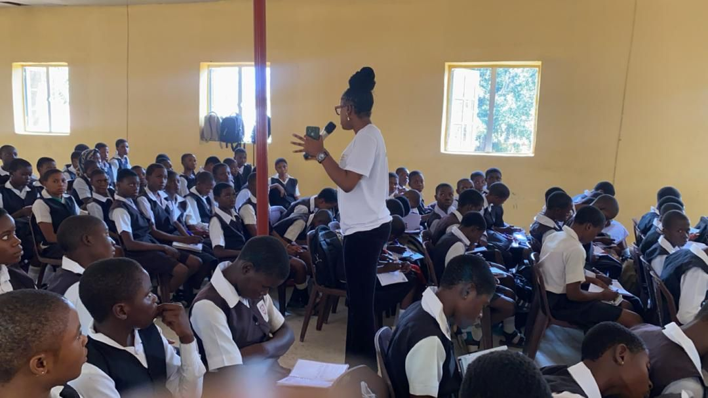
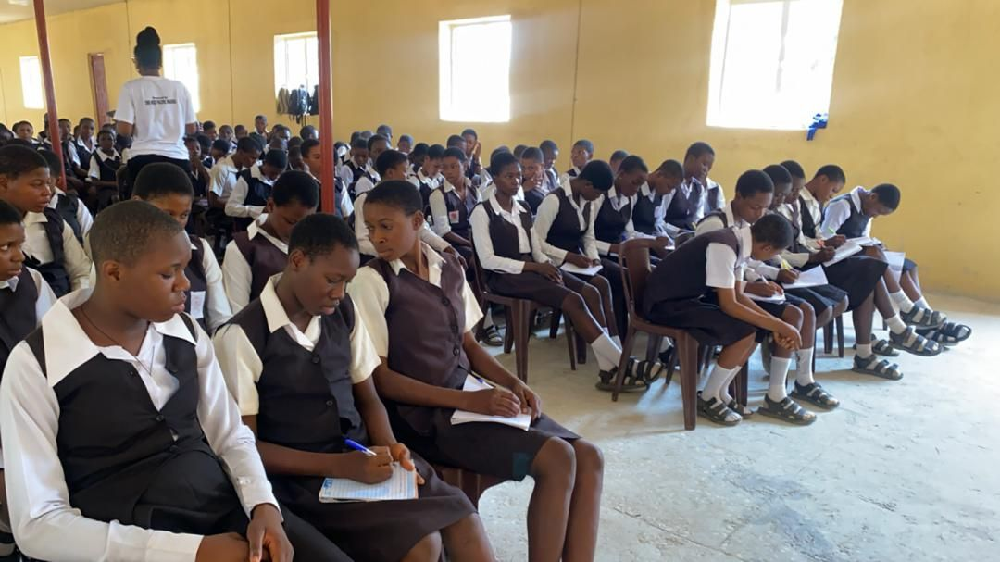
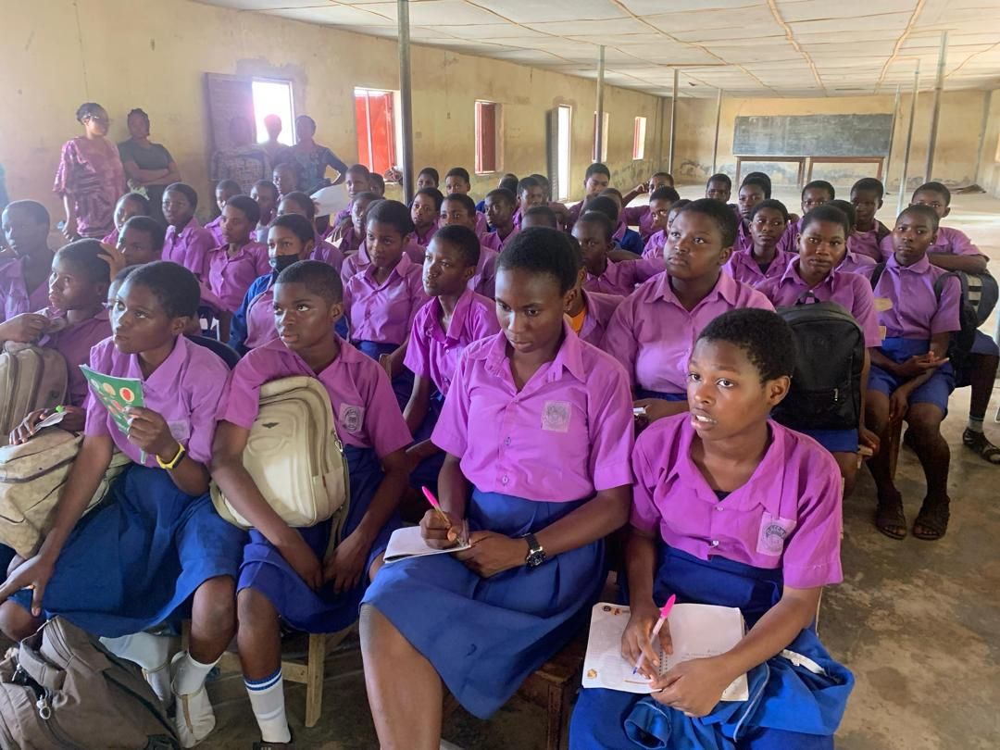
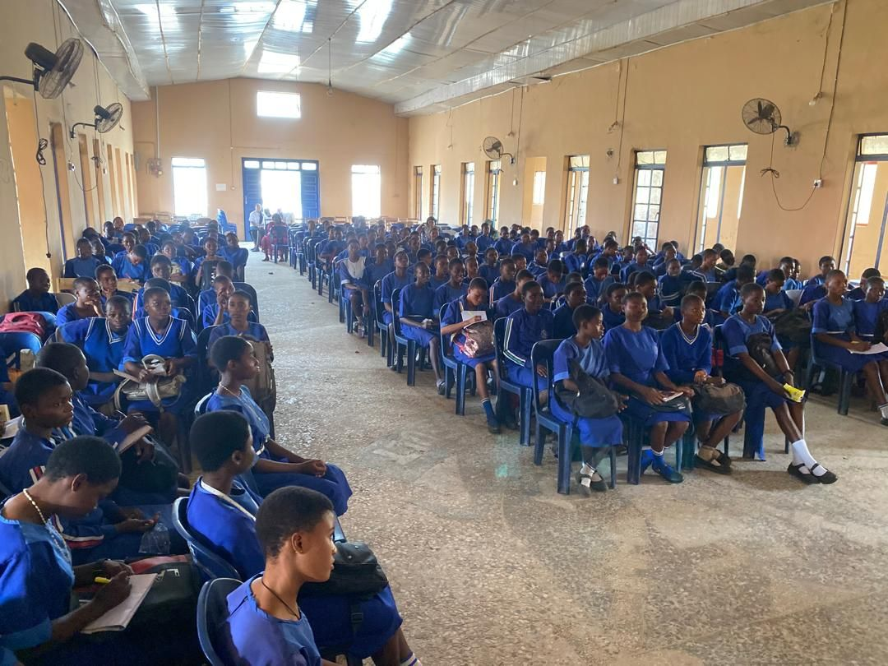
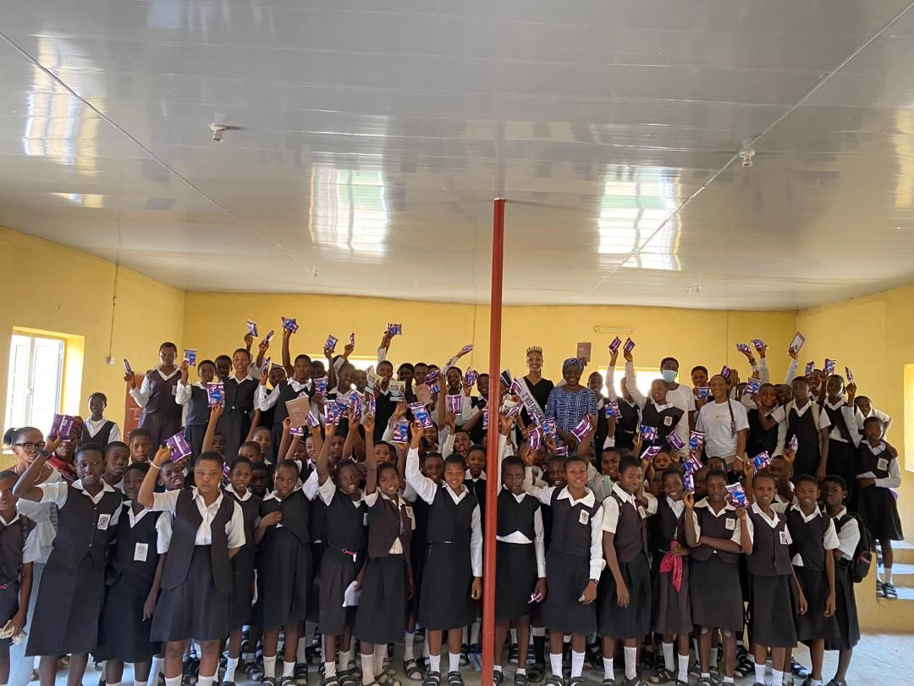
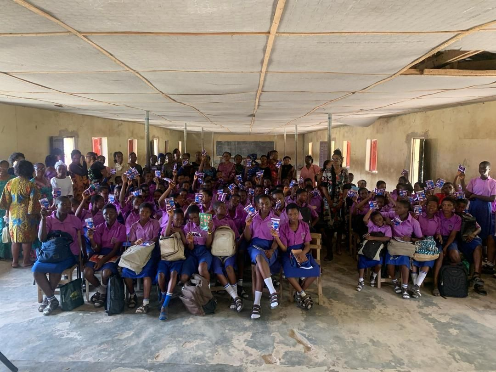

01
Hygiene, health and human dignity
We work to end period poverty. Girls receive sanitary pads and plain-spoken teaching on menstrual health, and communities learn the hygiene habits that stop disease from spreading.
YAY Foundation is a youth-led Nigerian foundation. We take menstrual hygiene, education, inclusion and environmental care into schools and communities, and we tie every outreach to the UN Sustainable Development Goals.

We solve key social challenges through inclusivity, hygiene, education, environmental awareness and sustainability, so that children from every background get an equal start.
Youngsters Are Young-stars (YAY) Foundation was founded on 13 February 2025 to close the gap between global development goals and what happens in a classroom in Ado-Ekiti, Ilorin or Rivers State. Our work rests on one conviction: social justice, human dignity and a healthy environment depend on each other.
We work with young people as partners and leaders, in line with the United Nations Youth2030 Strategy. Girls and boys both belong in the room, and so do children with special needs and disabilities.
Each pillar answers a problem we meet in schools and on the street, and each one maps to specific Sustainable Development Goals.
We work to end period poverty. Girls receive sanitary pads and plain-spoken teaching on menstrual health, and communities learn the hygiene habits that stop disease from spreading.
We provide books, learning materials and mentorship to underserved young people, so that poverty does not decide who gets to learn.
We bring boys in as allies for gender equality, and we speak up for neurodivergent children and for young people with physical or cognitive disabilities.
We train young people in responsible waste management, recycling and care for their local environment, building habits that last.
Leaving no one behind means going beyond one city or one region. We adapt each outreach to local custom and keep the same message of equity everywhere.
Every date below is a day spent in a school hall or on a street, talking with young people and leaving something useful behind.
Before the foundation was incorporated, we sat with students at Oromonike Secondary School, shared sanitary products and talked about what period poverty does to schooling and self-esteem.
A health education session for more than 250 girls on managing menstruation, the myths around it and how period poverty keeps girls out of class.
More than 150 schoolgirls joined a session on health, self-esteem, dignity and leadership. Across both Ekiti schools that day, over 400 pad packs and school supplies were handed out.
Volunteers cooked and served nutritious meals to more than 100 children living on the streets, because a hungry child cannot learn.
300 more female students took part in career mentoring, leadership development, rights advocacy and environmental hygiene awareness.
Over 700 girls received health education, sanitary supplies and mentorship, with the authorisation and endorsement of the Kwara State Ministry of Education.
Full halls, open notebooks and a lot of questions. These photographs come from our school visits.







A short clip filmed by our team in a school yard, with hundreds of girls gathered for the day's session.
Each target names the goals it serves and how we intend to deliver it. This is the plan we share with ministries, funders and partner organisations.
| Indicator | Target | SDG alignment | How we deliver |
|---|---|---|---|
| Menstrual hygiene training | At least 1,500 girls | SDG 3SDG 4SDG 5 | School workshops, hygiene pack distribution, peer educator networks |
| Community outreach | 5,000 people within 12 months | SDG 10SDG 11 | Town hall sessions, educational rallies, digital campaigns |
| Long-term human impact | 10,000 lives by 2030 | SDGs 1 to 17 | Multi-state expansion, civic education, youth leadership programmes |
| Institutional partnerships | Formal partnerships with state ministries | SDG 17 | Ministry approvals, public sector co-sponsorship, school alignment |
| Inclusive engagement | Boys, neurodivergent youth and children with disabilities included | SDG 5SDG 10 | Male advocacy workshops, accessibility initiatives |
Outreach helps the girls in the room. Policy helps every child in the country. These recommendations come from what we have seen in schools across four regions.
State Ministries of Education and Social Development should set up accreditation and co-sponsorship frameworks for verified youth-led NGOs. Our work with the Kwara State Ministry of Education shows the model: clear approval, access to public schools and shared accountability.
VAT exemptions on locally made sanitary pads lower the price, but families with no spare income still cannot buy them. Production subsidies and direct procurement budgets would put free pads in public schools, correctional facilities and rural communities.
Every primary and secondary school needs clean, gender-separated toilets, running water, handwashing points and menstrual waste disposal. Japan's School Health and Safety Act is a working example, with regular inspections that keep schools compliant.
The basic education curriculum should include age-appropriate teaching on menstrual health, personal hygiene, gender equity, civic leadership and environmental care. Putting it in science and civic lessons removes stigma and reaches every child.
Dedicated funds, paired with mentorship, would turn pilot projects such as waste recycling, school nutrition drives and accessibility campaigns into permanent programmes. Malawi's National Youth Innovation Fund is a precedent.
We welcome funding, materials, expertise and official support. Tell us what you have in mind and our team will reply by email.
Approve and co-sponsor outreaches in public schools, and work with us on hygiene, education and child rights policy in your state.
Fund sanitary supplies, learning materials and expansion into new states, with outcomes reported against SDG indicators.
Run a joint programme, invite us to your school, volunteer your time or give towards the next outreach.
Questions, invitations to speak and press requests are all welcome.